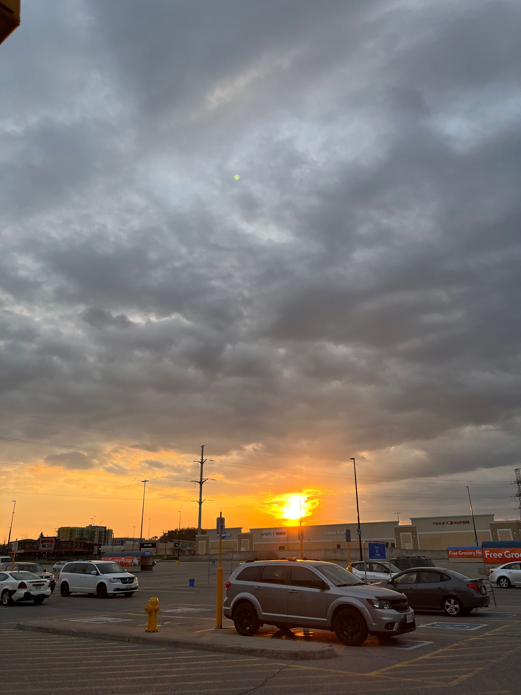
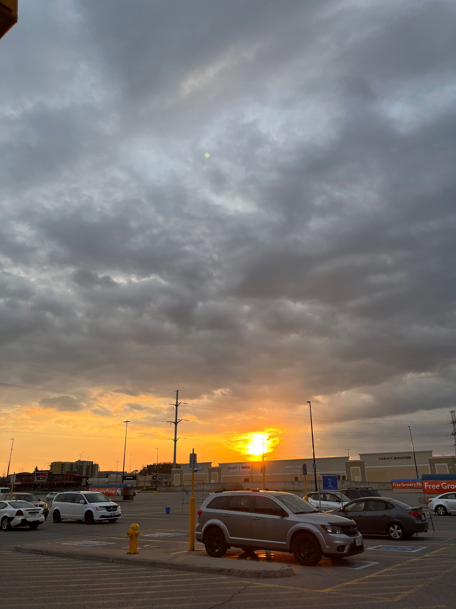
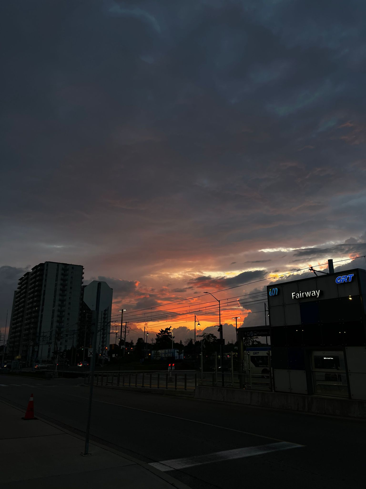
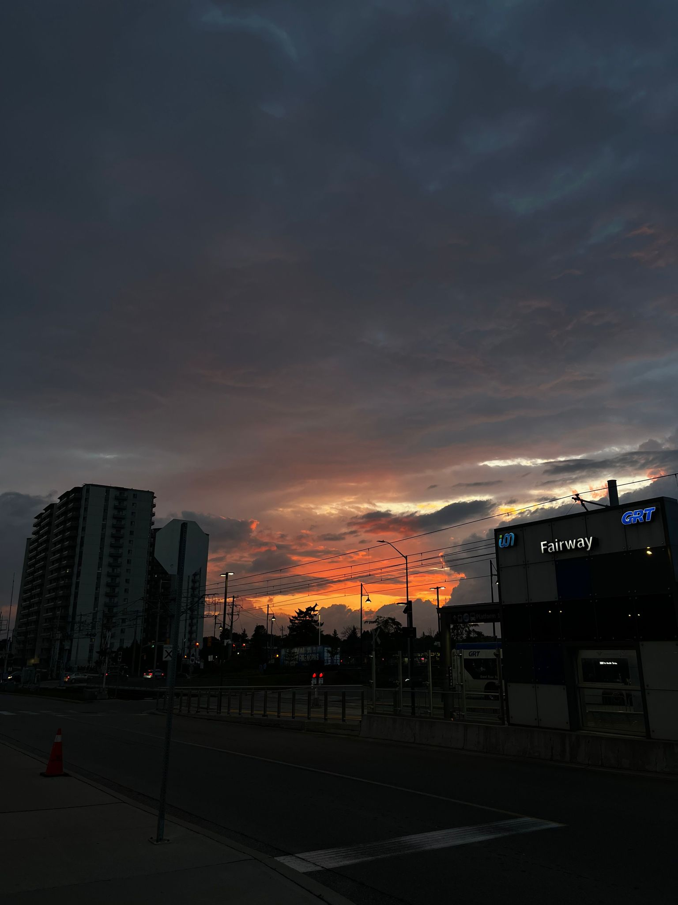

Hobby
Traveling
Traveling is not just a hobby; it's a transformative experience. It opens doors to new cultures, breathtaking landscapes, and unforgettable adventures. From tasting exotic cuisines to exploring historical sites, every journey fuels personal growth and broadens horizons. So pack your bags, embrace the unknown, and let traveling become your lifelong passion.
Photography
Photography, particularly capturing sunsets, is a captivating hobby that embraces the art of storytelling through visuals. The allure lies in the fleeting nature of sunsets, as each one is a unique blend of vibrant colors and ethereal beauty. Photographers who specialize in sunsets understand the importance of timing and composition to encapsulate the moment's magic.


 



 
